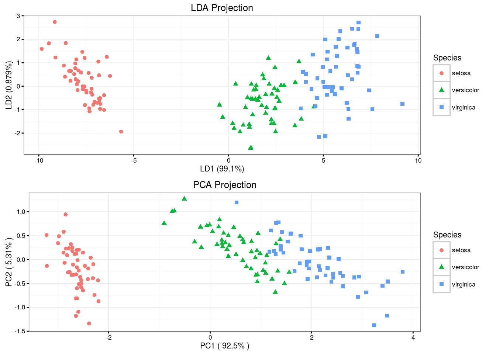
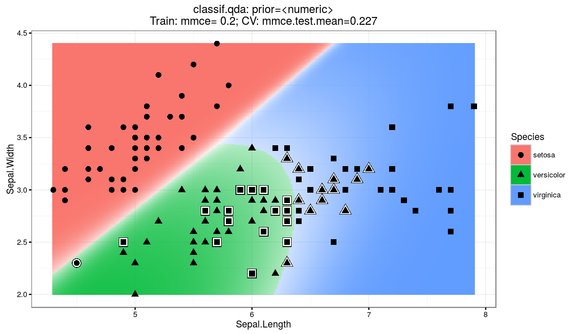
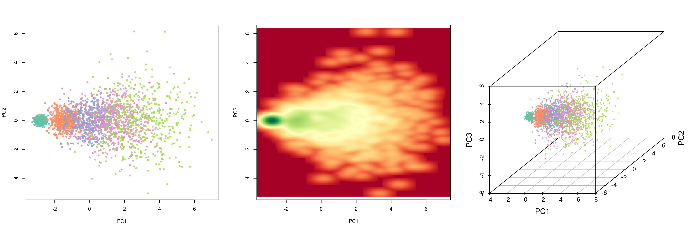
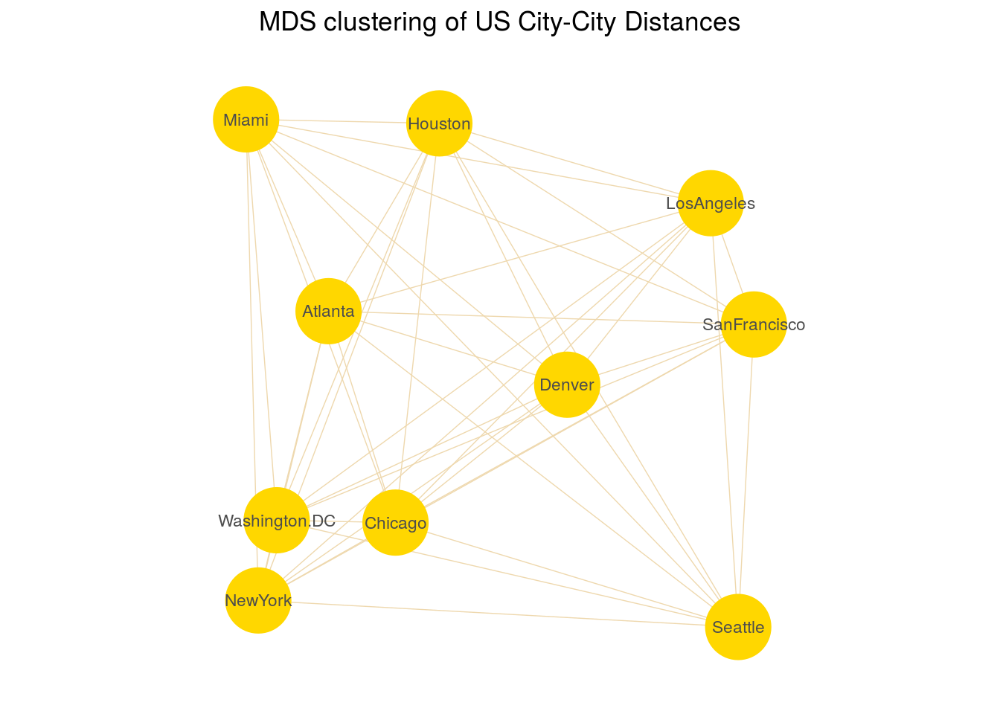

The LDA method approximates the Bayes classifier assuming that the \(p\)-dimensional random variable \(X\) is drawn from a multivariate Gaussian distribution \({\mathcal N}(\mu_k ,\, \mathbf\Sigma)\). The classifier assigns an observation \(X = x\) to the class for which \[ \hat\delta_k(x) = x^T \mathbf\Sigma^{-1} \mu_k - \frac{1}{2} \mu_k^T \mathbf\Sigma^{-1} \mu_k + \log {\pi_k} \] is largest. \(\hat\delta_k(x)\) is the discriminant function, and \(\pi_k\) is the class membership probability.
model.lda <- lda(Species ~ ., iris, prior = c(1, 1, 1) / 3)
model.lda$means## Sepal.Length Sepal.Width Petal.Length Petal.Width
## setosa 5.006 3.428 1.462 0.246
## versicolor 5.936 2.770 4.260 1.326
## virginica 6.588 2.974 5.552 2.026model.lda$scaling## LD1 LD2
## Sepal.Length -0.8293776 0.02410215
## Sepal.Width -1.5344731 2.16452123
## Petal.Length 2.2012117 -0.93192121
## Petal.Width 2.8104603 2.83918785model.lda$svd## [1] 48.642644 4.579983confusionMatrix(predict(model.lda)$class, iris$Species)$table## Reference
## Prediction setosa versicolor virginica
## setosa 50 0 0
## versicolor 0 48 1
## virginica 0 2 49
Unlike LDA, QDA assumes that each class has its own covariance matrix. That is, it assumes that an observation from the \(k\)th class is of the form \(X \sim {\mathcal N} (\mu_k ,\, \mathbf\Sigma_k)\). \[ \hat\delta_k(x) = -\frac{1}{2} {(x - \mu_k)}^T \Sigma_k^{-1} (x - \mu_k) -\frac{1}{2} \log {|\mathbf\Sigma_k|} + \log {\pi_k} \]
model.qda <- qda(Species ~ ., iris, prior = c(1, 1, 1) / 3)
model.qda$means## Sepal.Length Sepal.Width Petal.Length Petal.Width
## setosa 5.006 3.428 1.462 0.246
## versicolor 5.936 2.770 4.260 1.326
## virginica 6.588 2.974 5.552 2.026ftable(model.qda$scaling, row.vars = c(1, 3))## 1 2 3 4
##
## Sepal.Length setosa -2.8369624 -3.1451104 -0.8878372 -0.4637981
## versicolor -1.9373419 1.1979086 1.9588188 -0.6910239
## virginica 1.5726248 -0.8085097 2.6909994 0.4068814
## Sepal.Width setosa 0.0000000 3.9386336 0.1263223 -0.2043238
## versicolor 0.0000000 -3.7467503 1.1503013 2.0855780
## virginica 0.0000000 3.4866013 0.0459556 -1.9279371
## Petal.Length setosa 0.0000000 0.0000000 5.9785398 -1.7416275
## versicolor 0.0000000 0.0000000 -3.3892132 2.8839194
## virginica 0.0000000 0.0000000 -3.6018203 -0.6578080
## Petal.Width setosa 0.0000000 0.0000000 0.0000000 10.2978593
## versicolor 0.0000000 0.0000000 0.0000000 -9.3404922
## virginica 0.0000000 0.0000000 0.0000000 4.3947753confusionMatrix(predict(model.qda)$class, iris$Species)$table## Reference
## Prediction setosa versicolor virginica
## setosa 50 0 0
## versicolor 0 48 1
## virginica 0 2 49
Rotates the axes of original variable coordinate system to new orthogonal axes, called principal components, such that the new axes coincide with the directions of maximum variation of the original observations. The first principal component of a set of features \(X_1, X_2,\ldots, X_p\) is the normalized linear combination of the features \[ Z_1 = \phi_{11} X_1 + \phi_{21} X_2 + \ldots + \phi_{p1} X_p \] that has the largest variance. Assuming that the features in \(\mathbf X\) has been centered, \(Z_1\) solves the optimization problem \[ \underset {\phi_{11}, \ldots, \phi_{p1}}{\arg \max} \left\{ \frac{1}{n} \sum_{i=1}^n {\left( \sum_{j=1}^p \phi_{j1} x_{ij}\right)}^2 \right\} \text { subject to } \sum_{j=1}^p \phi_{j1}^2 = 1. \] At the \(k\)-th stage a linear function \(\boldsymbol\phi_k^T \mathbf x\) is found that has maximum variance subject to being uncorrelated with \(Z_1, Z_2, \ldots, Z_{k-1}\).
# Generates sample matrix of five discrete clusters that have very different
# mean and standard deviation values.
pca.data <- matrix(c(rnorm(10000, mean = 1, sd = 1),
rnorm(10000, mean = 3, sd = 3),
rnorm(10000, mean = 5, sd = 5),
rnorm(10000, mean = 7, sd = 7),
rnorm(10000, mean = 9, sd = 9)),
nrow = 2500, ncol = 20, byrow = T,
dimnames = list(paste0("R", 1:2500),
paste0("C", 1:20)))pca <- prcomp(pca.data, scale = T)
summary(pca)$importance[, 1:5]## PC1 PC2 PC3 PC4 PC5
## Standard deviation 2.187569 0.9836436 0.9737847 0.9560479 0.9457342
## Proportion of Variance 0.239270 0.0483800 0.0474100 0.0457000 0.0447200
## Cumulative Proportion 0.239270 0.2876500 0.3350600 0.3807600 0.4254900
Classical MDS rests on the following equation: Let \(\mathbf X\) be the \(n \times p\) matrix of point coordinates (assumed here to be column-centered for simplicity); then, the matrix of squared Euclidean distances with elements \(d_{ij}(\mathbf X) = \sum_{s=1}^p (x_{is} - x_{js})^2\) is \[ \mathbf D^{(2)} = \mathbf {1 \boldsymbol\alpha'} + \mathbf {\boldsymbol\alpha 1'} - 2 \mathbf {X X'} \] where \(\mathbf 1\) is a vector of ones of appropriate length and \(\boldsymbol\alpha\) the vector with diagonal elements of \(\mathbf {XX'}\). Given \(\mathbf D\), \(\mathbf X\) is found as follows. Let \(\mathbf J = \mathbf I - \mathbf {11'} / \mathbf {1'1}\) be the centering matrix, \(-1/2 \, \mathbf J \mathbf D^{(2)} \mathbf J = \mathbf {XX'}\). Then the eigendecomposition of \(-1/2 \, \mathbf J \mathbf D^{(2)} \mathbf J\) is \(\mathbf {Q \Lambda Q'}\), and so \(\mathbf X = \mathbf Q \mathbf\Lambda^{1/2}\). If the matrix of dissimilarities \(\mathbf\Delta\) is not euclidean it can be approximated by \(\mathbf\Delta^{(2)}\) for \(\mathbf D^{(2)}\).
Classical MDS minimizes the Strain loss function \[ \newcommand{\norm}[1]{\left\lVert#1\right\rVert} Strain(\mathbf X) = \norm {(-1 / 2 \, \mathbf J \mathbf\Delta^{(2)} \mathbf J) - \mathbf {XX'}} ^2 \]
We will use the UScitiesD dataset that gives the straight line distances between 10 cities in the US.
# inspect first five elements
as.matrix(UScitiesD)[1:5, 1:5]## Atlanta Chicago Denver Houston LosAngeles
## Atlanta 0 587 1212 701 1936
## Chicago 587 0 920 940 1745
## Denver 1212 920 0 879 831
## Houston 701 940 879 0 1374
## LosAngeles 1936 1745 831 1374 0model.mds <- cmdscale(UScitiesD)
model.mds## [,1] [,2]
## Atlanta -718.7594 142.99427
## Chicago -382.0558 -340.83962
## Denver 481.6023 -25.28504
## Houston -161.4663 572.76991
## LosAngeles 1203.7380 390.10029
## Miami -1133.5271 581.90731
## NewYork -1072.2357 -519.02423
## SanFrancisco 1420.6033 112.58920
## Seattle 1341.7225 -579.73928
## Washington.DC -979.6220 -335.47281